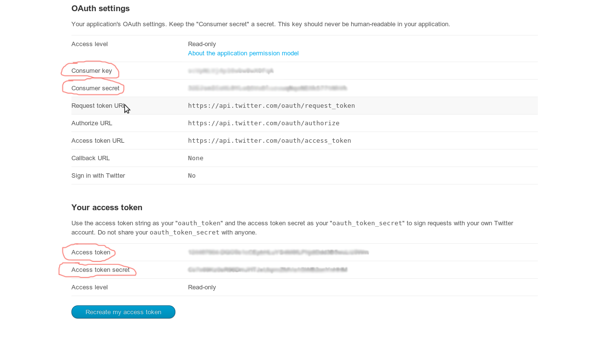
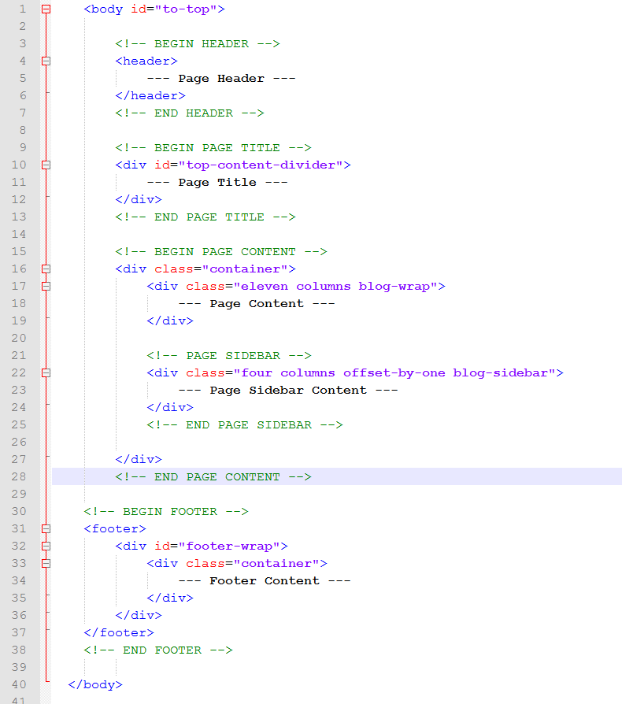
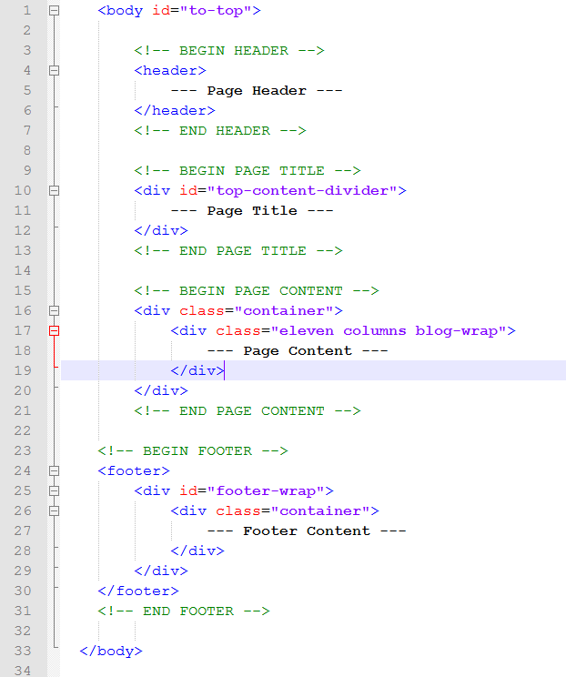

Created: 23/08/2012
By: raybreaker
Email: raybreakr@gmail.com
Thank you for purchasing my theme. If you have any questions that are beyond the scope of this help file, please feel free to email via my user page contact form here. Thanks so much!
This chapter will gives you general instructions on how to setting up slider. Later chapters will explain individual slider options in more detail.
<ul> element inside <div class="bannercontainer"> will correspond to our slider and each individual <li> element inside it to one slide.
You can see example of code to initialize slider with one slide below:
<div class="bannercontainer">
<div class="banner">
<ul>
<li data-transition="boxslide" data-slotamount="7" data-link="http://www.google.de">
<-- Main slide image -->
<img src="images/slides/image1.jpg">
<-- Slide captions goes here -->
<div class="caption sft big_white" data-x="400" data-y="100" data-speed="700"
data-start="1700" data-easing="easeOutBack">KICKSTART YOUR WEBSITE</div>
<div class="caption sfb big_orange" data-x="400" data-y="142" data-speed="500"
data-start="1900" data-easing="easeOutBack">WITH SLIDER REVOLUTION!</div>
</li>
</ul>
</div>
</div>
Each Slide (<li> </li>) MUST include a main image which is added as a simple <img> tag at the first level. It can be a Simpe image, a colored or transparent image, or dummy image as lazy load version.
<img src="images/slides/slide13.jpg" >
<img src="images/slides/transparent.png" style="background-color:#56e34a" >
<img src="images/slides/dummy.jpg" data-lazyload="images/slides/slide13.jpg">
Each <li> (slide) can include unlimited amount of Captions. Caption are simple html markups with iframe, image, heading , paragraph and any other tags. Each Caption must be wrapped via a <div class="caption"></div>.
Each Caption has some special classes and some data- attributes, to set animation type, position, speed, easings etc.
The slider can play Vimeo, YouTube and HTML5 (videoJs) Videos, in boxed and "FullSlide" size. Via the Embeded API's the Slider will be paused, and restarted from the VideoPlayers. To use the Video Files in Slider see the following instructions.
Each Video file has the same data- options like:
Boxed version
YouTube VIdeo will be added within a caption due an iframe. The Following example shows an iFrame embeded YouTube Video in a caption (460px X 259px), i.e.:
<div class="caption fade " data-autoplay="true" data-nextslideatend="false" data-x="130" data-y="70" data-speed="500" data-start="10" data-easing="easeOutBack"> <iframe src="http://www.youtube.com/embed/YHWkro9-e9Q?hd=1&wmode=opaque&controls=1&showinfo=0" width="460" height="259"></iframe> </div>
<div class="caption fade fullscreenvideo"
data-autoplay="true"
data-nextslideatend="true"
data-x="0"
data-y="0"
data-speed="500"
data-start="10"
data-easing="easeOutBack">
<iframe src="http://www.youtube.com/embed/YHWkro9-e9Q?hd=1&wmode=opaque&controls=1&showinfo=0"
width="100%" height="100%"></iframe>
</div>
<div class="caption fade "
data-autoplay="true"
data-nextslideatend="false"
data-x="190"
data-y="110"
data-speed="500"
data-start="10"
data-easing="easeOutBack">
<iframe src="http://player.vimeo.com/video/29298709?title=0&byline=0&portrait=0;api=1"
width="460" height="259"></iframe>
</div>
<div class="caption fade fullscreenvideo"
data-autoplay="true"
data-nextslideatend="true"
data-x="0"
data-y="0"
data-speed="500"
data-start="10"
data-easing="easeOutBack">
<iframe src="http://player.vimeo.com/video/29298709?title=0&byline=0&portrait=0;api=1"
width="100%" height="100%"></iframe>
</div>
The VideoJs Files are only loaded if the html5 video markup exist. Please do not forget to add the videoJsPath in the initialising Options !
Boxed Version (i.e.)
<div class="caption randomrotate "
data-x="20"
data-y="80"
data-speed="300"
data-start="2100"
data-easing="easeOutExpo"
data-autoplay="true"
data-nextslideatend="false">
<video class="video-js vjs-default-skin" controls preload="none" width="600" height="240"
poster="http://video-js.zencoder.com/oceans-clip.png" data-setup="{}">
<source src="http://video-js.zencoder.com/oceans-clip.mp4" type='video/mp4' />
<source src="http://video-js.zencoder.com/oceans-clip.webm" type='video/webm' />
<source src="http://video-js.zencoder.com/oceans-clip.ogv" type='video/ogg' />
<track kind="captions" src="demo.captions.vtt" srclang="en" label="English" />
</video>
</div>
<div class="caption randomrotate fullscreenvideo"
data-x="0"
data-y="0"
data-speed="300"
data-start="2100"
data-easing="easeOutExpo"
data-autoplay="true"
data-nextslideatend="true">
<video class="video-js vjs-default-skin" controls preload="none" width="100%" height="100%"
poster="http://video-js.zencoder.com/oceans-clip.png" data-setup="{}">
<source src="http://video-js.zencoder.com/oceans-clip.mp4" type='video/mp4' />
<source src="http://video-js.zencoder.com/oceans-clip.webm" type='video/webm' />
<source src="http://video-js.zencoder.com/oceans-clip.ogv" type='video/ogg' />
<track kind="captions" src="demo.captions.vtt" srclang="en" label="English" />
</video>
</div>
<div class="tp-bannertimer"></div>
<div class="tp-bannertimer tp-bottom"></div>
STEP 1. Obtain Google Maps API keys here
STEP 2. Find following line of code on every page where google maps will be shown and enter API key there:
<script type="text/javascript" src="http://maps.googleapis.com/maps/api/js? key=enter_here_google_maps_api_key&sensor=true"></script>
STEP 3. Get desired location coordinates:
STEP 4. Open "allscript.js" file in the "js" folder and find the following lines of code there (line 1280 and line 1290 by default):
//Coordinates of the map's center (line 358 for contact, line 393 for main page maps) center: new google.maps.LatLng(40.710670, -73.999604) //Coordinate of the map marker's location (line 371 for contact, line 406 for main page maps) position: new google.maps.LatLng(40.710670, -73.999604)
STEP 5. Change values in bold on coordinates that you copied in the third step.
STEP 1. Go to http://dev.twitter.com/apps and sign up (or sign in with your Login and Password) there;
STEP 2. Click on "Create a new application" button. The name and description of your application can be anything you like and the website field doesn’t have to be the site where your Twitter feed are located.
STEP 3. On the next screen, click on "Create my access token" button. You may need to refresh the page after a few seconds if it doesn’t appear automatically.
STEP 4. Copy value in Consumer key, Consumer secret, Access token, Access token secret fields.
STEP 5. Open get-tweets.php file in your theme folder and insert value that you copy in previous step on line 7, 8, 9 and 10 accordingly.
STEP 6. Open allscript.js file in the "js" folder and find following lines of code (line 240 by default):
$.getJSON('../get-tweets.php',{"twitterusername": "envato", "displaylimit": 3},;
STEP 7. Change value in bold on the username whose tweets you want to display.
To make contact form work you should:
To make online reservation form work you should:
NATION template include booking calendar pro jquery plugin that used to create fully working booking system.
Plugin has backend and frontend part. Frontend part is visible for users, you may already see it when visit our demo website for example on this page (click on "availability" tab in description). Also it's used on reservation form page and many other place in template.
Backend part normally shoudn't be accessible by user because it used to change booking info of entire booking system. You may check our backend on this page.
Follow steps bellow to setting up your booking system:
STEP 1. Create special table for booking calendar in your MySQL database.
STEP 2. Open opendb.php file in "php" folder and enter your MySQL user, password and database name that you created in first step.
STEP 3. Determine how much items you'll need to have in your booking system (for example on demo website we have 9 various hotel rooms so we should have 9 various item for that purpose).
STEP 4. For every items in your booking system you have to create special file in backend folder with name backend1.php for first item, backend2.php for second, backend3.php for third etc. and following content:
//backend1.php content <h2>Item 1 description:</h2> <br /> <div id="backend"></div> //backend2.php content <h2>Item 2 description:</h2> <br /> <div id="backend2"></div> //backend3.php content <h2>Item 3 description:</h2> <br /> <div id="backend3"></div>
STEP 5. Frontend used to show info that you enter in corresponding backend for ordinary users. You'll have to use correct number of frontend to match your backend (by default we use 9 so you'll have to adjust it to correct number). We use frontend on following page:
STEP 6. You'll have to set up admin password so only you can have access to backend. To do this open pass.php file in backend folder and edit username and password there. By default username=admin and password=123.
If you visited our demo website you may noted style switcher that can immediately change style of theme. To do the same with your copy of theme you should do following:
To set up new background or pattern for body you have to do following:
This theme is a fixed layout with two and one columns. The general template structure is the same throughout the template but id attributes may change from page to page for example blog page wrap will have class="blog-wrap" but simple page with content will have class="page-wrap" etc.
Example of general content structure with two columns.
Example of general content structure with one columns.
If you would like to edit the color, font, or style of any elements in one of these columns, you would do the following:
#page-content div {
color: #someColor;
}
If you find that your new style is not overriding, it is most likely because of a specificity problem. Scroll down in your CSS file and make sure that there isn't a similar style that has more weight.
I.E.
.containter #left-content div {
color: #someColor;
}
So, to ensure that your new styles are applied, make sure that they carry enough "weight" and that there isn't a style lower in the CSS file that is being applied after yours.
We using three CSS files in this theme.
The style.css file contains all of the specific stylings for pages. The file is separated into the following sections:
/* Default Style Section (line 1- 406) */ some code /* Base Skeleton Grid Initializing (line 406 - 1086) */ some code /* Nation Meta Style (line 1086 - 2215) */ some code /* NATION Main Style (line 1086 - 7894) 1. Header (line 1086 - 2485) 2. Front Page (line 2485 - 3412) 3. Reservation Pages Style (line 3412 - 4170) 4. Blog Pages (line 4170 - 4624) 5. Other Pages (line 4624 - 5119) 6. Footer (line 5119 - 5442) 7. Style for mobile devices (line 5442 - 7893) */ some code
The settings.css file contain styles for revolution slider that used on front and reservation pages.
The booking-calendar-pro.css file contain styles for the booking calendar pro jQuery plugin.
If you would like to edit a specific section of the site, simply find the appropriate label in the CSS file, and then scroll down until you find the appropriate style that needs to be edited.
This theme imports eight Javascript files.
If you want to change the default behavior one of the plugins that used at this theme you should open allscript.js file and find the line of code where that plugin initialized.
You may find full API description of the plugins on following page:
I've used the following images and icons:
Following images used in preview but not comes with theme (however they can be purchased separately on Photo Dune):
Once again, thank you so much for purchasing this theme. As I said at the beginning, I'd be glad to help you if you have any questions relating to this theme. No guarantees, but I'll do my best to assist. If you have a more general question relating to the themes on ThemeForest, you might consider visiting the forums and asking your question in the "Item Discussion" section.
raybreaker